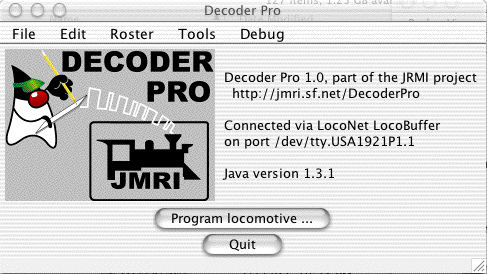

A quick DecoderPro tour
|  |
StartupWhen you first open the programmer, you see this window. Click the "Program locomotive" button to start. (This assumes you have already connected your computer to your layout and have a locomotive on your programming track) |

|
Decoder and Programmer selectionYou'll get a new window to configure the programmer with information about a specific type of decoder, or an existing locomotive. This will become your locomotive roster as you program your decoders To start working with a newly-installed decoder, click the adjacent "Ident" button to have the programmer read the decoder and attempt to identify it. (You could also explicitly tell the programmer the decoder type) While the programmer is talking to the decoder, status will be displayed in the bottom of the window; "Idle" or "OK" means that things are working. If it succeeds, it will select the decoder model in the selection box. Usually it will only be able to narrow the selection down to a few choices. Check that the right model is selected in the "Decoder Installed" box; update the selection if desired. Some people prefer a very simple programmer, and some want to have access to every feature. To handle this, DecoderPro provides several different programming interfaces:
|

|
Programmer DetailsEach of the tabs selects a screen you can use to configure different aspects of the decoder. The "Basic" pane handles the address other settings you'll usually need. Using the buttons on the bottom of each screen are buttons that will read values from or write values to the decoder. For example, to do a basic configuration, enter values in the fields and click Write sheet. The variable fields are color coded to represent their states:
|
  |
ExamplesFor example, after a "Read" the speed table values are shown as white in the first image, While in the second image it shows that when you modify a value, its marked as yellow. Doing a write will set it back to white; doing a read will reset the value to the value in the decoder, and also reset it to white. |

|
Complex interactions - function mappingsAlthough having a name for an entire CV is nice, where this really helps is with complicated bit-mapped options. Digitrax FX lighting options, for example, require configuring two sets of bits into one CV. Another example is configuring a Soundtraxx decoder's mapping between functions and sounds. This involves bits and values spread across a dozen different CVs, but Decoder Pro turns that configuration job into simple checking of boxes. Each selection box, checkbox or radiobutton is mapped to specific bit(s) in the decoder's CVs. The programmer handles the reading and writing of the CVs when the individual settings are changed. Instead of bits, you're working with the name or description from the decoder manual. |

|
Decoder-specific programmer panelsDecoderPro is meant to be easily configurable to add new types of decoders. You can also add programmer sheets, change their layout, and even redo the entire appearance. To do that, DecoderPro is driven by human-readable files in XML format. Documentation on the file contents exists, and we're working to continuously update it. These files make it convenient to update DecoderPro to work with a new decoder. For example, the unique capabilities of a Digitrax DH142 appear on a "Digitrax" sheet. Additional decoder-specific variables and sheets can be added via configuration files. By choosing an industry-standard XML format for decoder information, we hope to make it possible to create a complete library. Perhaps we can even interest manufacturers in documenting their products in this format. |

|
Direct CV ProgrammingIts also possible to program the CVs directly using the CV Programmer. The "Read" and "Write" buttons allow you to work with individual CV contents. Changes made here will also update any associated values found on other programmer screens. |

For more info, see Roster Topics |
Locomotive RostersDecoderPro maintains a roster of your locomotives. You can save the decoder configuration, and then later work with the stored CV values instead of having to read them from the decoder. This saves the time it takes to read a complete decoder, which can be quite long. The roster can also store locomotive information for you. The "Roster Entry" sheet displays this info and allows you to edit it. Click "Save" to store the roster information to a file on your computer's local disk; you'll be reminded to do this if you close the programmer with any unstored information. The "ID" field at the top is the name you'll later use to select this locomotive. |

|
Selecting a roster entryDuring DecoderPro startup, you can select a specific locomotive to work with by using the "Use locomotive settings for ..." pulldown menu. The "Ident" button uses the DCC address to select a specific locomotive in the roster. When you click "Open Programmer" with a specific locomotive selected, the programmer opens each sheet with the current values already present. You can print the current locomotive's information from the programmer windows. From the "File..." menu, select "Print...", and fill out the dialog box that's presented. |
{kind=link}
Thanks and congratulations to all who contributed!
Copyright © 1997 - 2004 JMRI Community.
JMRI, DecoderPro, PanelPro, DispatcherPro and associated logos are our trademarks.
Additional information on copyright, trademarks and licenses is linked here.
Site hosted by: